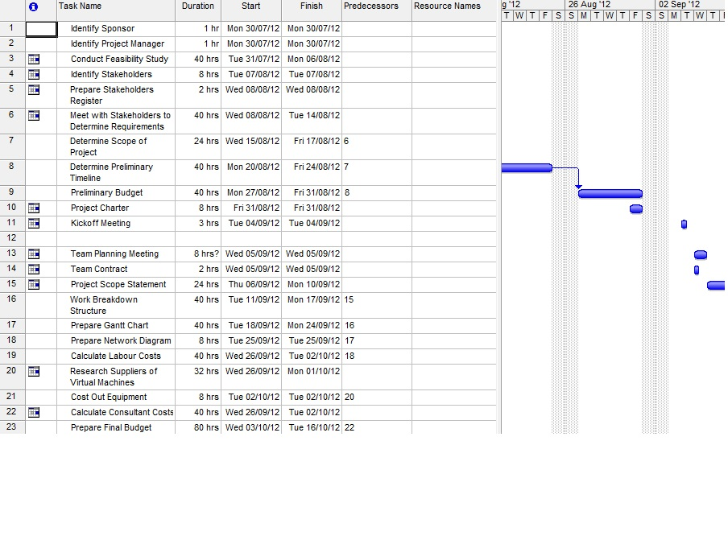

This was a project management assignment completed where we had to follow the System Development Life Cycle (SDLC) of a project from its inception to completion. It involved the introduction of a new computer server into a company replacing two antiquated servers in an office with approximately 30 employees. The installation, testing and transfer to the new server had to be completed without interuption of service to the employees. The entire project was completed using many aspects of Microsoft Project, thus making me very familiar with how it works and the great value it has in the planning and implementation of a project of any size.